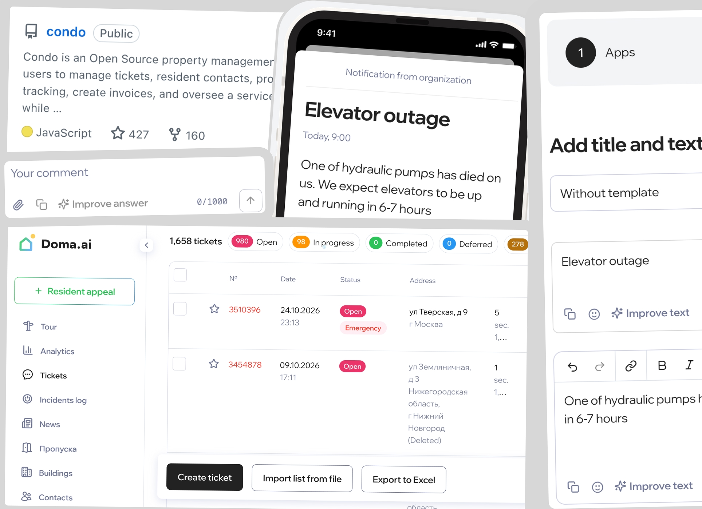
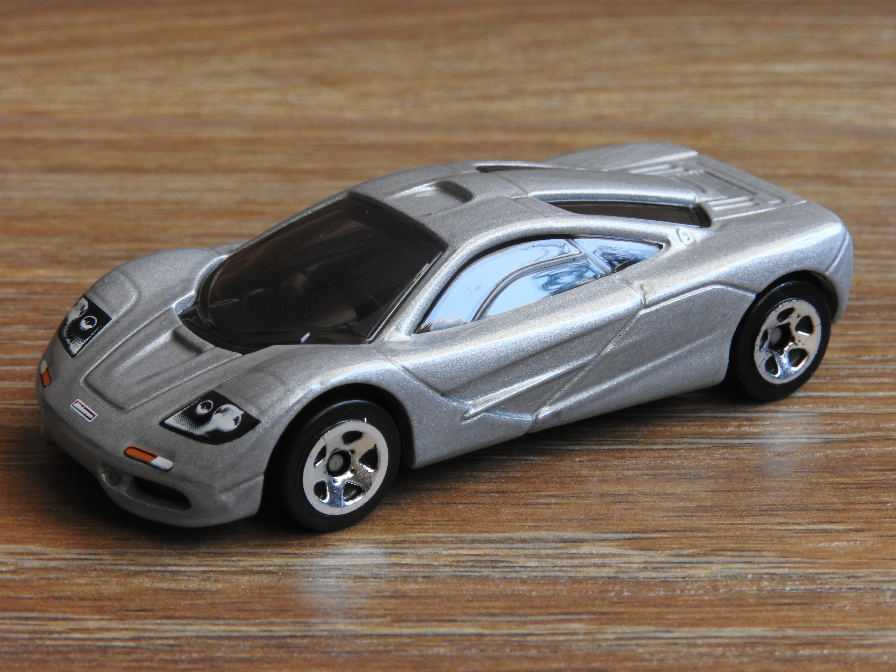

simple-git-hooks
Simple open source zero-dependency git hooks manager for JS projects. 1.7k stars on GitHub, ~1m weekly and 40m+ total downloads on NPM.
Simple open source zero-dependency git hooks manager for JS projects. 1.7k stars on GitHub, ~1m weekly and 40m+ total downloads on NPM.
I helped build a popular open-source CRM for property management. It powers at least two working B2B SaaS Companies: Doma.ai for CIS and Russia and Unitify.com for worldwide – also my current workplace.

I benchmarked 22 modern LLMs on curated unsaturated set of 125 real life questions from Russian property managers. Then I ran Closed book evaluations. OpenAI Sol took the pole. Best Russian models came second. Results and graphs.
Lets take SOTA open weight models for mesh generation, texturing and mesh reconstruction and try to apply them to real life problem of toy cars collecting.

Reconstructed the XZ Utils backdoor (CVE-2024-3094) for ~150 CS students — the two-year social-engineering campaign and the sshd hook hidden in test archives. UrFU, May 2024.
How to choose a name for an event — the core problem of electronic voting, anonymity with a correct count, and how zero-knowledge proofs solve it in Helios-style systems. U-Camp, Kaş, Oct 2023.
JPEG is old, and JPEG XL is 100% better, why are we not using it? What does it have to do with Chrome?